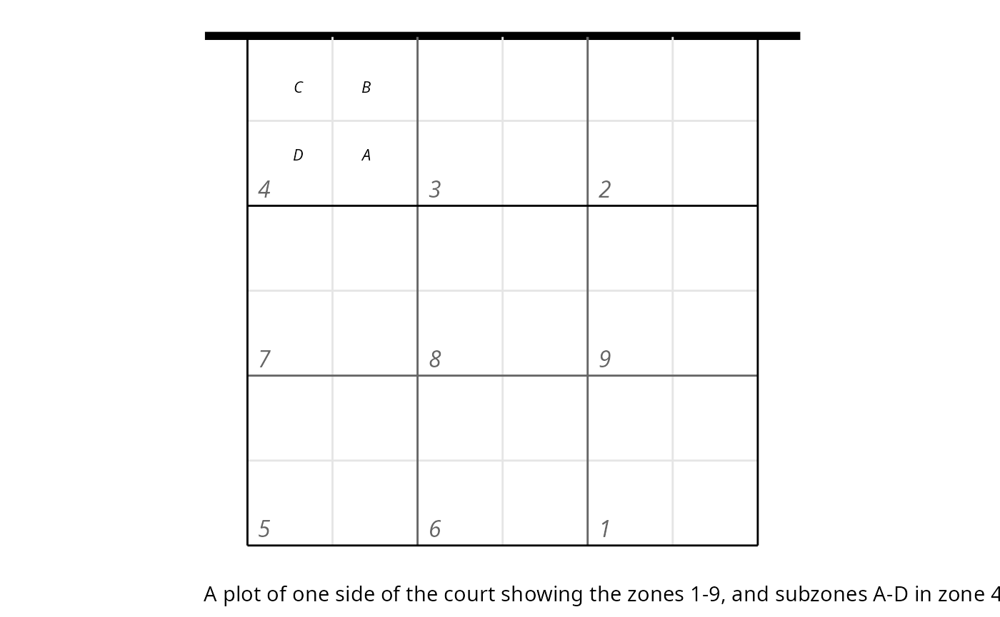

Introduction
ovscout2 is a free, open-source R/Shiny app for scouting volleyball matches. It provides industry-standard dvw files that can be used with the openvolley suite of R packages, or with any other volleyball analytics software that takes dvw files as inputs.
The app offers two modes of scouting: using a guided point-and-click interface, or by typing.
Click-scouting is very easy to learn but still delivers high-quality scout files. It requires that you have a video of the match from a fixed view point (i.e. the camera does not move for the duration of the match, or at the very least it only moves occasionally). Such videos are usually taken from the “scout viewpoint” — behind one end of the court, at a reasonable height so that the entire court is clearly visible and players on court do not tend to occlude each other.
The app is writen in R, but you do not need to be an R user to be able to use it. We provide script files to launch the app from the command line — see the Standalone section below for installation and startup.
Installation
The app can be run on Windows, Linux, or Mac systems. It is possible to run the app on a laptop or desktop and connect to that with a tablet or similar touch device to do the actual scouting. See Device considerations below.
You need to be online for installation. The app initially needs to download and install some additional R packages (quite a few, in fact). Once the app has been installed and run once, it can be used offline thereafter.
Also see the “Other system utilities” section, below.
Standalone
The standalone installer allows you to run the app without having to do anything in R.
Windows
Install R, following https://cran.r-project.org/bin/windows/base/. Ensure that the “Save version number to registry” box is ticked during installation.
Download https://github.com/openvolley/ovscout2/releases/latest/download/ovscout2-win-x64.zip and unzip it to a convenient location.
Run the
ov_scouter.batorov_scouter_demo.batfile. The first run will take quite some time, because it will install a number of additional R packages. Subsequent startups will be much faster (it checks for updates on each startup, so might reinstall some packages on occasion).
Linux/Mac
Install R, following https://cran.r-project.org/.
On Mac, you will also need to install XQuartz: https://www.xquartz.org/.
Optionally install “Other system utilities” (see below).
Download https://github.com/openvolley/ovscout2/releases/latest/download/ovscout2-unix-x64.zip and unzip it to a convenient location.
Run the
ov_scouterorov_scouter_demoscript. The first run will take quite some time, because it will install a number of additional R packages. Subsequent startups will be much faster (it checks for updates on each startup, so might reinstall some packages on occasion).
Installation from R
Optionally install
lighttpd(see “Other system utilities” below)-
From RStudio:
install.packages("ovscout2", repos = c("https://openvolley.r-universe.dev", "https://cloud.r-project.org"))or
install.packages("remotes") ## only needed once remotes::install_github("openvolley/ovscout2")
Other system utilities
Two other system utilities are recommended but not required. Note that the standalone Windows bundle already includes these utilities — no further action is needed in that case.
pandoc is required for generating match reports from scouted files. Install following https://github.com/jgm/pandoc/blob/master/INSTALL.md. If not present, the report generation menu item won’t be shown. If you are starting the app from RStudio, you do not need to install pandoc because RStudio comes bundled with its own copy.
lighttpd is a lightweight web server that is used to play the match video (when using a local video file). Install (from within R, on Windows only) using
ovscout2::ov_install_lighttpd()or manually from http://lighttpd.dtech.hu/ (for Windows) or via your package manager for other operating systems (see https://redmine.lighttpd.net/projects/lighttpd/wiki/GetLighttpd). Iflighttpdis not installed, the app falls back to servr but this is a little slower and less responsive thanlighttpd.
Startup
Some of startup options are the same regardless of whether you are using the standalone version or starting the app from within R:
the “season directory” is a folder containing dvw files from other matches. If you are scouting a new match and you provide a season directory, you can choose teams from other matches for the new match. This saves having to re-enter team and player details. The season directory will also be used as the starting point when selecting a video file
the video file is required for click-scouting, and optional for type-scouting
you can also optionally provide a .dvw or .ovs file (i.e. a partially-scouted file that you wish to continue scouting). If you do not provide a dvw file, the app creates a new, empty match file.
Startup — standalone
Run the ov_scouter.bat (Windows) or
ov_scouter (Linux/Mac) script. It will prompt you for a
season directory, dvw file, and video file. The season directory and dvw
file are optional (a new match file will be created if no dvw is
provided) but the video is required for click-scouting.
Options controlling the app behaviour and scouting preferences can be changed via the “Preferences” button in the app. You can switch from click-mode scouting to type-mode or vice-versa from within the app — see Switching scout modes below.
Startup — from R
In each session you first need to load the ovscout2 package:
Then start the app. You can start it with no arguments:
… and it will prompt you (as for the standalone version) for a season directory, dvw file, and video file. The season directory and dvw file are optional (a new match file will be created if no dvw is provided) but the video is required.
You can optionally provide those arguments explicitly. To start a new match for a certain video file, using teams from already-scouted matches in your season directory, you could do:
ov_scouter(video_file = "/path/to/video.mp4", season_dir = "/path/to/season_dir")If you have already partially-scouted a match and saved that file, you can re-start scouting:
ov_scouter("/path/to/saved_file.ovs")(In this case you do not need to provide the video file path, because that is saved within the .ovs file.)
Starting a new match
To scout a new match, start the app, then:
If you are using video, define the court reference via the “Court reference” button. This requires you to click on the four corners of the court in the video image, so that the app can translate click locations on the video to real-world court coordinates. This is mandatory for click-scouting and optional for type-scouting (but if you don’t do it, you can’t click the video in order to add precise locations to ball touches. You can click the small court diagram instead).
Enter the match details via the “Edit match data” button (match date, venue, scout name, etc). You can do this later if you are in a hurry.
Define the teams playing in the match. If you have provided a season directory (with existing .dvw or .ovs files in it) you can choose from the teams in those files (“Select teams” button). Otherwise you can enter new teams via the “Edit teams” button.
If you are in a hurry, use the “ Fast start” button in the “Edit teams” dialog. This will automatically populate players with numbers 1–99 in a team. You can do this, scout the match, and then return later to (automatically) remove players that don’t actually exist and assign the correct names to the ones who do.
Enter the team lineups for set 1, including the libero(s) for each team. If two liberos are entered, then the app will assume that the first libero is on court during serve reception (i.e. the “passing” libero) and the second libero is on court while serving (the “defending” libero). If the team has two liberos but only one takes to the court per set, then just enter the libero who is actually going to play in that set
And before unpausing the video and starting to scout, check that:
the orientation of the court diagram (top right) matches the video. Swap it using the ⇵ button if required
check that the correct team is serving (indicated by the white circle in the court diagram). Swap with the “Change serving team” button if required
The scouting process is discussed in Scouting in detail, below.
Preferences and keyboard shortcuts
There are a number of options available that alter the behaviour or
appearance of the app. These can be set (if you are starting the app
from within R) via parameters to the ov_scouter() function.
Most can also be set via the “Preferences” button in the app (others
will be added in due course):
scout_modesets your preferred scouting mode (clicking or typing)auto_save_diris a directory into which the scouted file will be saved (in .dvw format) after each rally. You can use this to e.g. provide live file updates to be used by the coaching benchscoreboard- show the scoreboard in the top right-hand corner of the video screen (true by default)ball_path- show the ball path on the court diagram (false by default, because it slows the app down a little)review_pane- show the video review pane on each data entry popup (true by default)playlist_display_option- what to show in the plays table? Either “dv_codes” (scouted codes) or “commentary” (a plain-language interpretation of the touches)click_shortcuts- a named list that defines the keyboard shortcuts used in the app when in click-scouting modetype_shortcuts- a named list that defines the keyboard shortcuts used in the app when in type-scouting modeplaystable_shortcuts- a named list that defines the keyboard shortcuts used in the playstable, in both click-scouting and type-scouting mode
Click-scouting conventions
There are a few ways in which you can tailor the click-scouting to
your requirements. These can set via the
ov_scouting_options() function or the “Click-scouting
conventions” pane in the preferences. They include:
end_conventiondetermines whether you are treating the end coordinate of an attack or serve as the actual end location (i.e. where the ball contacted the floor or out of bounds area), or the intended end location. The actual might differ from the intended if there is a block touch or the ball hit the net. If “actual”, and a block touch is recorded, then the end location of the attack will not be used for the dig location (the dig location will be missing).nblockersanddefault_nblockers. IfnblockersisTRUEthen the data entry will include a section to enter the number of blockers on each attack. This is recommended and set toTRUEby default. Thedefault_nblockersvalue can be used to set the number of blockers that will be pre-selected on each attack. Having a default value might speed up the data entry process very slightly but it is not recommended because it’s easy to forget to update it on each attack and then your data will include default-valued entries that you can’t easily distinguish from genuine ones that you actually entered.transition_sets. IfFALSE, then sets in transition are not scouted. After entering an attack end location (and play continues) the next click will be for the counterattack start location, with no set scouted in between.attacks_byallows attacks to be recorded by combination code (“X5”, “V5”, etc) or just by tempo (high, medium, quick)set_quality. IfFALSE(which is the default), set actions are not graded, although set errors and over-sets (a set that goes over the net) are marked as such. Ifset_qualityisTRUE, the data entry will include a section where each set can be graded as “excellent”, “good”, “OK”, or “poor”.-
setter_calls. The “setter call” is where the setter instructs their middle to run. For example, a setter call of “K2” means that the middle hitter ran behind the setter (as if to hit a quick ball behind). The setter call is entered even if the setter actually set someone else. You can set this to “none” (no setter calls), “reception” (setter calls on reception-phase attacks only), or “both” (setter calls will be recorded on both reception-phase and transition-phase attacks). Setter calls are not recorded on poor reception/dig or overpasses.Note that if you are not scouting transition sets, you can’t record setter calls in transition because the setter call code is attached to the setting action. If
transition_setsisFALSEandsetter_callsis “both”, it will be treated as “reception”.
Type-scouting conventions
There are many fewer convention settings for type-scouting, because those conventions are largely controllled directly by the scout and what they are entering when they type. The only setting here is whether the scout is using zones or cones to record attack directions. See the Switching between zones and cones section below.
Shortcuts
Keyboard shortcuts can be viewed by clicking the “ Keyboard” button.
Shortcuts can be changed from the shortcuts pane (click the shortcut
in question and type the new shortcut key to use). Changes to shortcuts
made within the app cannot currently be saved, but users starting from R
can specify shortcuts via the click_shortcuts,
type_shortcuts, and playstable_shortcuts
parameters.
Key remapping
In type-scouting mode it is possible to remap keys (so that when you press a particular key, it is treated as if it were a different key). This remapping is commmonly done by scouts so that their keyboard input can be faster and more efficient.
The only key remapped by default is the “;” key, which is remapped to
“a”. Key remappings can only be changed when starting from R (see the
key_remapping parameter). It is not currently possible to
change the key remappings when using the standalone startup.
Scouting in detail
Click-scouting
The click-scouting process is a guided one. Each contact is marked by clicking on the video at the time and point of contact, with the point of contact being the point on the floor directly below the ball as it is being played. This will often be between the player’s feet as they dig or set the ball, or below them if they are jumping to spike.
- unpause the video. The number of the serving player and their serve type (float/jump/etc) will be shown below the video panel. You can change the serve type before the serve, if you can see that it is wrong
First contact (serve)
click the serve (the point on the court below the ball) as it happens. The video will continue playing
click the reception location (if the ball is touched by a receiver) OR the point where the ball lands/hits the net (if it is an untouched ace or an error). The video will automatically pause and a dialog will pop up allowing you to select the receiving player and serve outcome (serve error, ace, or reception in play). You can also adjust the serve type if it was incorrect. In some cases it isn’t clear at this point if the serve was an ace or a “reception in play” (e.g. a shanked pass that players are chasing down, but we haven’t yet seen if they are successful). In this case click “Reception in play”. It can be adjusted to an “Ace” at the next step, if necessary
If you did not click the reception location correctly, or for some other reason want to go back and try again, click “Cancel and rewind”. Otherwise click “Continue” and the video will resume playing.
Second contact (set)
click the location of the set (or second-contact action if it was something else, such as a setter tip. Remember that this is the point on the ground directly below the ball, not the ball itself). The video will pause and a data entry dialog will pop up
choose the correct second-contact action (by default this is a “Set” but it can also be a set error, setter tip, second-ball attack, or freeball over. If the reception turned out to be an error here (serve ace, with no second contact to scout) you can also select that here
if you are including setter calls, select the appropriate one here. The setter call buttons will be hidden on poor passes and overpasses
check the pass quality. It will have been automatically given a grade, but in some situations you might need to override the automatic assessment
if the pass was an overpass, you can assign the appropriate opposition action (dig, dig error, or overpass attack) and player
The second contact is by default a set, by the assigned setter on court. Once you are comfortable with the scouting process, and if you are not including setter calls, it is possible to streamline the scouting process slightly: when you see a second contact set by the setter, you can hold down the shift key while clicking the second contact. This causes the app to enter a set action (by the setter) with the automatically-assigned pass quality, without stopping the video or showing the data entry dialog, which makes this part of the scouting faster.
Similarly to a reception error, in some cases it isn’t immediately clear if the set is an error or not (e.g. an unhittable set, or a delayed double-contact call by the referee). Scout this as a set (by the appropriate player) and it can be converted to a set error in the next step if necessary.
If you are including set quality, this is chosen on the next data entry dialog (so that you have time to see the set and evaluate it).
Third contact (attack)
The third contact is most commonly an attack (but can also be a freeball over or set error, or a play by the opposition on an overpass/overset.
click the contact location (remember that this is the point on the ground directly below the ball, not the ball itself). The video will pause and a data entry dialog will pop up
if you are including set quality, select the appropriate value
If it is an attack:
enter the attacking player and either the attack combination code (if you are scouting with combination codes) or tempo
optionally (but recommended) enter the number of blockers on the attack
Otherwise enter the appropriate action and player.
Attack end point
After an attack or freeball over, click the end point. If you are scouting with “actual” end convention (see Preferences and keyboard shortcuts) then this is the point where the ball lands, or the point on the court directly below the ball when it is played. If end convention is “intended”, this is the point where the attacker intended to hit the ball.
If the ball deflects off the block or the net, and you want the ball path to show this exactly, you can do this by entering the attack as normal, and then going back afterwards (at the end of the rally, perhaps) and editing the coordinates. Click the icon underneath the court rotation diagram and you will be prompted to enter new coordinates for the attack, including a middle coordinate that can be used to show the block deflection.
Enter the appropriate details. An attack kill, dig or dig error can also involve a block touch — this can be recorded (see “With block touch by player …”).
If the attack was dug (i.e. play continues) and you do not care about scouting digs, you can shift-click the attack end point and the app will record the end point of the attack without showing a popup dialog. This is faster, but note that no dig will be scouted, and no block touch can be entered.
Transition play
Scouting now continues until the point ends, with attacks, digs, and other contacts being recorded. By default, sets in transition are not scouted (except for set errors, since a set error will end the rally). After an attack, we record the dig location and then straight to the counter-attack location, with no intervening set being scouted. You can choose to include transition sets if you wish (see Preferences and keyboard shortcuts to change this behaviour) but there is not a huge practical advantage in doing so. It does not enable much more in terms of analytics, but takes extra time to scout, so transition sets are disabled by default.
End of the point
The point can be ended by entering a terminal action (kill or error), or if the point ends in a way that doesn’t fit nicely with the available options, you can pause the video (press the pause shortcut key) and choose “Won current rally” for the appropriate team.
End of the set
When the set concludes, it will prompt you to confirm whether it is the end of the set. Confirm the end of the set and then enter the lineups for the next set ready to start scouting that one.
End of the match
At the end of the match, you don’t need to do anything extra. Just end the final set as normal, and ignore the instruction to enter the lineups for the next set. And now you can generate a match report, if you wish!
Timeouts and substitutions
Pausing the video (press the pause shortcut key) will bring up a dialog that allows you to enter a timeout or substitution, or change the setter on court for a given team (e.g. if the team is playing a two-setter system, you will need to change the setter on court each time the setters swap).
Type-scouting
An introduction to type-scouting is beyond the scope of this manual. You can find some information online or through (paid) courses and books. If you are not already familiar with type-scouting, it is strongly recommended that you use the click-scouting mode instead. It is designed to allow high-quality match information to be recorded but with a vastly easier learning curve.
For type-scout users, be aware that there are some non-standard scouting codes that can be used in ovscout2 that might save you a few keystrokes:
starting lineups can be entered with
Lcodes such asL 4,7s,8,10,1,3,17(you can use spaces instead of commas if you prefer). The first six numbers give the players starting in positions 1–6, with “s” being used to designate the setter. The 7th (and 8th) numbers after theLare optional and are the libero(s). UseaLfor the visiting team lineup.-
attack combinations can be entered without the player number. For example, if the home team made an
X5attack kill to position/cone 3 you can enterX53#without the player’s jersey number (useaX5...for the visiting team). ovscout2 will automatically infer the player number. For anX5attack this is the front-row outside hitter, except in P1-reception when the opposite is expected to hit from position 4. Note some limitations on this process:it can’t assign a player number to second-ball attacks (
P2by default) or overpass attacks (PR);it uses the attack start zone and setter position (team rotation) to infer the player number;
it assumes that the team is playing with standard player role patterns and a setter-outside-middle rotation (i.e. the close outside hitter is in position 2 when the setter is in 1).
If the team plays with some other patterns, or if these assumptions don’t hold for a particular attack, provide the player number in the scout code as usual.
setter calls in reception need only be
Kx— the set action will be assigned to the on-court setter of the receiving team. Setter calls in transition, if you wish to include them, will need the team identifier as well (i.e.*KxoraKx),
Switching scout modes
You can switch between click-scouting and type-scouting with the “ Change scout mode” button.
It is recommended that you don’t switch modes while part-way through a match, because there is a risk that the data you collect before and after switching will be inconsistent. Switch modes before you start scouting any ball touches.
Click-scouting only supports zones for attack end locations. If you are type-scouting with cones, the “Change to click scout mode” button will be disabled.
Switching between zones and cones
Short summary: if you are not sure, stick with zones.
Zones and cones in detail
Scouted match files allow locations of court to be recorded in several different ways with differing levels of accuracy:
- zones are a 3 x 3 grid of squares on each side of the court (so one zone is a 3m x 3m square on an indoor court) and numbered 1–9
- each zone can be divided into four subzones A–D (each subzone is a 1.5m x 1.5m square on an indoor court)
- coordinates lie on a 100 x 101 grid that covers the entire court plus a margin around the outside of it, giving locations with a resolution of about 10cm.

Zones and subzones apply to all skills. Attack end locations have an extra option of cones, which are numbered 1–7 (1–8 for middle attacks) and give the direction of the attack. Attack end locations/directions can be stored as cones or zones but not both in the same file. It is a common (but not universal) convention when scouting with cones that the cone gives the intended direction of attack, not the actual direction (the two might differ if the ball deflected off the block or the net).
In conventional scouting software, zones and subzones can be entered through the typed-in scout codes, but coordinates must be entered by clicking on a court diagram. In ovscout2 in click mode, all locations are recorded as coordinates (from the clicks that you make on the video or court diagram) and are converted internally to zones and subzones. When you export a click-scouted match to dvw, you have the option of converting attack end locations to cone directions, which will be generated from the attack end coordinates.
If you are type-scouting, you must choose between zones or cones for your attack end location/directions. It is not advisable to switch between them while scouting a match, because the existing zone end data will not be converted to cones (or vice-versa, if you are going the other way) and you will end up with inconsistent information in your match file. It is not possible to losslessly convert from zones to cones: zones don’t map uniquely to cones (and vice-versa). Coordinates can be converted to zones or cones, but be aware that your scouting conventions will matter for interpreting the end result. If you have click-scouted attacks with the end point being the actual end point of the attack (i.e. the dig location) then a cone can be assigned but it will be the actual direction of attack, not necessarily the intended direction. If you are click-scouting with intended attack end points then attacks with a block touch won’t have an end point recorded (and no cone will be assigned to those attacks when exporting to dvw with cones, nor a zone when exporting to dvw with zones).
If you have set your type-scouting preference to cones and you start the app with a partially-scouted file that uses zones, the app will start in zone mode to be consistent with the already-entered data.
Device considerations
The click-scouting process involves clicking the location of actions
on court, and so a touch screen device (ideally with stylus) is
recommended. It is possible to run the app on a laptop or desktop and
connect to it with a tablet or similar touch device to do the actual
scouting. In this case you would start the app from R on the main device
using the host and launch_browser options:
ov_scouter(..., host = "192.168.1.11", launch_browser = FALSE)where 192.168.1.11 is the IP address of the main device.
You should see a message similar to (the port number on the end will
vary):
Listening on http://192.168.1.11:5017Open a browser on the tablet and enter
http://192.168.1.11:5017 in the address bar.
Frequently asked questions
What’s the difference between a .ovs file and a .dvw file?
The .ovs file format is used internally by the app to store a match as it is being scouted. It is similar to a .dvw file, but contains more information than a .dvw file and in a different format. If you save a partially-scouted match and come back to it later to continue scouting, use the .ovs file format. (You can continue scouting from a partially-scouted file in .dvw format, but the “undo” functionality is limited).
If you have finished scouting a match and wish to use that match file in other analysis software (including the openvolley R packages), export it to dvw format and use that.
The video is black and the app says “Wait for the video media information to be loaded”
ovscout2 relies on the browser to do the actual video playback, but
some videos are not compatible with web browsers. *.MOV
files recorded with iPhones/iPads are known to suffer from this problem.
Try playing the video file directly in the web browser (open a new tab
and drag the video file onto it). If the video doesn’t play in the new
browser tab, you will need to re-encode the video into a
browser-compatible format (try https://handbrake.fr/, for example).
It crashed! Have I lost my work?
No. When the app exits, even if it crashes, it saves your current
file. Look for the message
working file has been saved to: /path/to/saved_file.ovs.
You can re-start scouting with (from R):
ov_scouter("/path/to/saved_file.ovs")or by navigating to that file in the file chooser on startup.